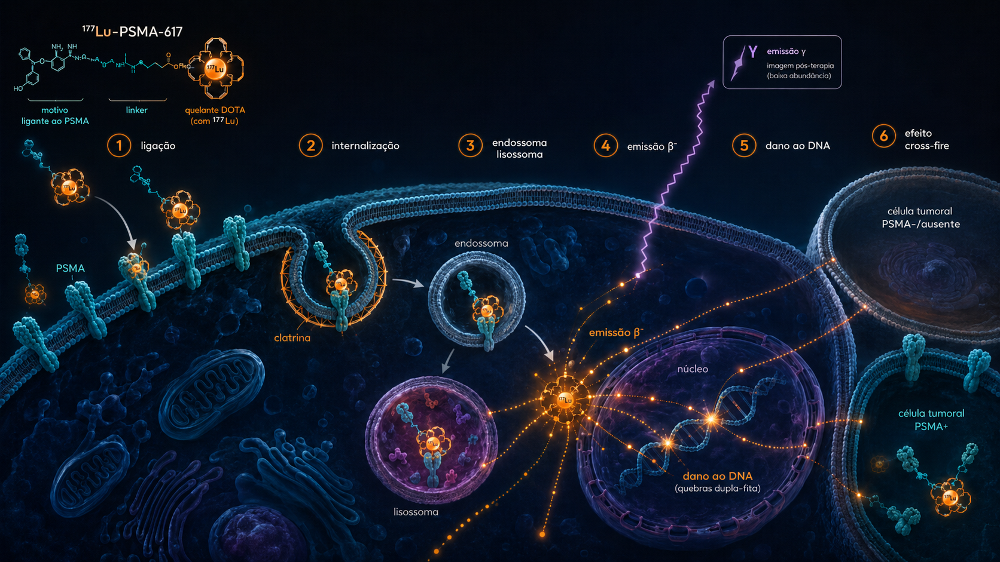

01 Cronologia
De ligantes peptídicos preliminares ao primeiro radioligante aprovado para câncer de próstata: 25 anos entre ciência básica, registro e adoção clínica.
Clonagem do cDNA do PSMA
Israeli, Heston e cols. clonam o cDNA do PSMA (glutamate carboxypeptidase II / FOLH1); o antígeno havia sido descrito por Horoszewicz em 1987 (anticorpo 7E11). Expresso em >95% dos cânceres de próstata, com superexpressão em doença avançada e resistente a castração. Importante: 5–15% dos mCRPC perdem expressão de PSMA após múltiplas linhas de ARPi ou em diferenciação neuroendócrina — daí a obrigatoriedade do PSMA-PET diagnóstico imediatamente antes de indicar a terapia.
Primeiros ligantes PSMA pequenos-moleculares
Eder, Haberkorn e o grupo de Heidelberg (DKFZ) desenvolvem ligantes baseados em ureia (Glu-CO-Lys), que se ligam ao bolso ativo da PSMA com alta afinidade e internalização.
PSMA-617 e primeiros tratamentos compassivos
Benesova e cols. publicam o PSMA-617 com farmacocinética otimizada — captação salivar reduzida e maior retenção tumoral. Heidelberg trata os primeiros pacientes com mCRPC em uso compassivo: respostas de PSA >50% em ~40-60%.
Hofman et al. (Lancet Oncol) — proof of concept prospectivo
Primeiro estudo prospectivo unicêntrico (Australia, Hofman): 30 pacientes, PSA50 57%, rPFS 7.6m. Dados que abrem caminho para o desenho do TheraP e, em paralelo, do VISION.
VISION (NEJM) e TheraP (Lancet) — fase 3 e fase 2 randomizada
VISION confirma ganho de OS (15.3 vs 11.3m) em mCRPC pós-ARPi e pós-taxano. TheraP mostra superioridade vs cabazitaxel em PSA50 (66 vs 37%), mantendo rPFS comparável e perfil de toxicidade favorável.
Aprovação FDA do Pluvicto · 23 mar 2022
Primeiro radioligante terapêutico para mCRPC: 7.4 GBq IV q6w × 6 ciclos em pacientes pós-ARPi e pós-taxano, com PSMA-PET positivo conforme critérios VISION.
PSMAfore (Lancet Oncol) e ENZA-p (Lancet Oncol)
PSMAfore valida o uso pré-taxano (rPFS 12.0 vs 5.6m). ENZA-p mostra benefício de combinar Lu-PSMA com enzalutamida em primeira linha mCRPC. Em paralelo, SPLASH (POINT–Lilly) valida outro radioligante PSMA, o 177Lu-PNT2002 (PSMA-I&T).
Expansão FDA pré-taxano + dados mHSPC
FDA expande indicação para mCRPC pré-taxano com base no PSMAfore (mar 2025). UpFrontPSMA (Lancet Oncol) demonstra benefício em mHSPC de novo de alto volume com Lu-PSMA + docetaxel. PSMAddition em recrutamento para mHSPC.
02 Mecanismo molecular
Ligação ao bolso ativo da PSMA na superfície da célula tumoral, internalização endolisossomal e entrega de radiação beta no núcleo da célula e suas vizinhas.

Ligação ao PSMA
O 177Lu-PSMA-617 reconhece e se liga com alta afinidade ao domínio extracelular do PSMA, superexpresso na membrana de células tumorais do câncer de próstata.
Internalização
Após a ligação, o complexo PSMA–radioligante é internalizado por endocitose mediada por receptor, frequentemente associada à formação de vesículas revestidas por clatrina.
Retenção endossomo-lisossomal
O radioligante é transportado para compartimentos endossomais e lisossomais, permanecendo retido no interior da célula tumoral e aumentando a entrega local de radiação.
Emissão β⁻ terapêutica
O 177Lu emite partículas beta menos, com alcance tecidual milimétrico, promovendo irradiação da célula-alvo e do microambiente tumoral adjacente.
Dano ao DNA
A radiação induz quebras simples e duplas do DNA, estresse oxidativo e falha de reparo celular, levando à morte tumoral por apoptose, senescência ou catástrofe mitótica.
Efeito cross-fire
A radiação beta pode atingir células vizinhas, inclusive com baixa ou ausente expressão de PSMA, ampliando o efeito terapêutico em tumores heterogêneos. A emissão gama do 177Lu permite imagem pós-terapia e avaliação da distribuição tumoral.
Ambos são Glu-CO-Lys com chelator DOTA, mas o PSMA-617 incorpora um espaçador 2-naftilalanina-tranexâmico que aumenta a afinidade pelo PSMA e reduz a captação salivar e renal. O PSMA-I&T (ligante usado no SPLASH/PNT2002 da POINT–Lilly e no ECLIPSE da Curium) tem chelator DOTAGA e perfil farmacocinético comparável.
O 177Lu non-carrier-added (n.c.a.), usado no Pluvicto, é produzido a partir de 176Yb por captura neutrônica seguida de separação radioquímica — entrega altíssima atividade específica (>3 TBq/mg) e mínimo 177ᵐLu (contaminante de meia-vida longa, 160 d). O 177Lu carrier-added (c.a.), mais barato, parte de 176Lu enriquecido e tem maior fração de 177ᵐLu, gerando rejeitos radiativos por décadas. Em programas de teranóstico de longo prazo, n.c.a. é padrão.
03 Esquema terapêutico
Padrão internacional do PSMA-617: 7,4 GBq por ciclo, intervalo de 6 semanas, 6 ciclos planejados, com possibilidade de redução por toxicidade.
Ciclos planejados
04 Imagem teranóstica
A seleção de pacientes para Lu-PSMA depende de PSMA-PET/CT diagnóstico — princípio teranóstico em sua forma mais pura: ver é critério para tratar.
Recomendação 2023 da SNMMI/EANM: descrição estruturada do exame usando miTNM (molecular imaging TNM) e escore tumoral global. No escore visual de expressão miPSMA, o fígado é a referência de captação (e a parótida, referência de expressão muito alta). Isso não se confunde com o critério regulatório de elegibilidade: para o VISION, as lesões metastáticas devem apresentar captação maior que o fígado, sem lesões mensuráveis com baixa ou ausente expressão de PSMA.
Sistema complementar ao PROMISE: classifica cada lesão em 5 categorias — 1-2 prováveis benignas, 3 indeterminadas, 4-5 prováveis malignas. PROMISE estrutura o relatório, PSMA-RADS gradua a confiança em cada achado.
05 Critérios PSMA-PET para elegibilidade
Critérios VISION são os adotados pela FDA. PSMAfore usa critério qualitativamente similar com pequena variação.
Cerca de 10-30% dos mCRPC têm doença discordante (FDG⁺ / PSMA⁻), associada a desdiferenciação neuroendócrina e prognóstico pior. O TheraP usou 68Ga-PSMA-11 PET e 18FDG-PET no screening: pacientes com lesão FDG⁺ > PSMA⁺ foram excluídos. O VISION não exigiu FDG, e parte dos não-respondedores possivelmente tinha doença discordante. Considerar FDG-PET se PSMA-PET mostrar lesões com captação heterogênea, lesões viscerais grandes ou se houver elevação rápida de PSA com PSA-PET pouco impressivo.
Critérios VISION
Inclusão (PSMA-positivo)
- Pelo menos 1 lesão metastática com captação PSMA > captação hepática normal
- Avaliação em PET/CT com 68Ga-PSMA-11 ou 18F-DCFPyL
- Captação dominante em qualquer sítio metastático suficiente para qualificar
Exclusão (PSMA-negativo dominante)
- Lesão metastática > 1 cm de partes moles com PSMA ≤ fígado
- Lesão linfonodal > 2,5 cm em eixo curto com PSMA ≤ fígado
- Lesão visceral > 1 cm com PSMA ≤ fígado
- Qualquer lesão óssea > 1 cm de partes moles associadas com PSMA ≤ fígado
O VISION utilizou exclusivamente 68Ga-PSMA-11 para seleção dos pacientes. A bula do Pluvicto e a prática internacional também aceitam o 18F-DCFPyL (Pylarify), desde que aplicados critérios qualitativamente equivalentes, com pelo menos uma lesão metastática apresentando captação superior à hepática.
O 18F-PSMA-1007 não foi validado nos ensaios pivotais e exige cautela na seleção para terapia, especialmente pela excreção hepatobiliar, que eleva o background hepático, e pela possibilidade de focos ósseos inespecíficos. Por esse motivo, quando utilizado, alguns protocolos substituem o fígado pelo baço como órgão de referência visual. Apesar dessas limitações, sua logística favorável — meia-vida mais longa, produção em cíclotron e distribuição centralizada — explica sua ampla utilização, inclusive no Brasil.
Cerca de 13% dos pacientes triados para o VISION foram excluídos por critérios de PSMA-negatividade, uma taxa relevante que reforça a obrigatoriedade do PSMA-PET diagnóstico antes de indicar o tratamento.
06 Ensaios pivotais
Lu-PSMA caminhou da última linha do mCRPC pós-taxano para combinações em mHSPC em apenas 4 anos. Resumo dos estudos que sustentam cada cenário.
mCRPC pós-ARPi e pós-taxano · n=831 · randomizado 2:1 vs SOC
Base regulatória do FDA. Estabeleceu Lu-PSMA como padrão pós-ARPi pós-taxano.
mCRPC pós-docetaxel · n=200 · fase 2, randomizado vs cabazitaxel
Superioridade em PSA50 e qualidade de vida vs cabazitaxel, com toxicidade G3+ menor. OS final 19,1 vs 19,6 m foi não-significativa (HR 0,97) — o crossover de ~32% e o cruzamento entre os braços diluiu a vantagem inicial. TheraP é positivo em desfecho de PSA, neutro em sobrevida.
mCRPC pós-ARPi, pré-taxano · n=468 · fase 3 vs ARPi switch
Expansão FDA mar/2025 para uso pré-taxano. OS por ITT mostrou HR 1,16 (não-significativo, devido a 84% de crossover); ajuste pré-especificado por RPSFT trouxe HR ~0,80. A FDA expandiu com base no rPFS robusto (HR 0,43).
mCRPC pós-ARPi pré-taxano · n=412 · 177Lu-PNT2002 / PSMA-I&T (POINT–Lilly) vs ARPi switch
Validação de outro radioligante PSMA (PNT2002, POINT–Lilly); a Curium valida o seu PSMA-I&T no ECLIPSE. Amplia o acesso ao tratamento.
mCRPC primeira linha · n=162 · Lu-PSMA + enzalutamida vs enza só
Primeira evidência randomizada de combinação Lu-PSMA + ARPi em mCRPC 1L. Seleção exigia ≥2 fatores de risco adversos (visceral, baixo PSA, alterações DDR, etc.) — não foi 1L "all-comers". Validação em fase 3 dependerá do PSMAddition e ENZACK.
mHSPC de novo de alto volume · n=130 · Lu-PSMA + docetaxel
Sinal forte em mHSPC de novo. Aguarda confirmação fase 3 (PSMAddition).
mHSPC · n=1126 · Lu-PSMA + ARPi + ADT vs ARPi + ADT
Estudo definidor para mHSPC. Pode posicionar Lu-PSMA na primeira linha.
07 Dosimetria
Tumor recebe ordens de magnitude mais radiação que qualquer órgão de risco. Glândulas salivares e lacrimais limitam mais que rins ou medula.
| Órgão / tecido | Dose por GBq (Gy/GBq) | Visualização | Limite cumulativo (referência) |
|---|---|---|---|
| Tumor (mediana) | 10 — 30 | — | |
| Glândulas lacrimais | ~ 2,8 | 40 Gy (referência) | |
| Parótidas | ~ 1,4 | 40 Gy (referência) | |
| Submandibulares | ~ 1,5 | 40 Gy (referência) | |
| Rins | ~ 0,7 | 23 Gy (BED) | |
| Medula óssea (vermelha) | ~ 0,03 | 2 Gy | |
| Fígado | ~ 0,1 | 30 Gy |
Análises dosimétricas do LuPSMA trial (Violet et al., J Nucl Med 2019) e do LuTectomy mostraram correlação entre a dose tumoral absorvida e a resposta. A dosimetria é feita por SPECT/CT quantitativo — clássica multi-tempo (ex.: 4, 24 e 96 h pós-dose) com software dedicado (MIM SurePlan, HERMES) para construir a curva tempo-atividade e estimar dose tumoral e renal; ou por métodos simplificados de tempo único (uma aquisição em ~48–72 h ou em 7 dias), que viabilizam a dosimetria na rotina. Em centros com infraestrutura, a dose personalizada pode otimizar a resposta sem aumentar a toxicidade.
08 Eventos adversos · perfil VISION
Toxicidade overall manejável. Hematológica é dose-limitante; xerostomia é a queixa crônica mais frequente.
Hemograma antes de cada ciclo é mandatório. Reduzir para 5,5 GBq se Hb < 9, plaquetas < 75 mil ou neutrófilos < 1.500. Xerostomia raramente é dose-limitante mas afeta qualidade de vida — pilocarpina e saliva artificial podem ajudar. Função renal estável após 6 ciclos no VISION (mediana de variação de TFG < 5 mL/min/1,73 m2).
09 Perspectivas: alfa, terbio, combinações
A próxima geração explora maior densidade de ionização (alfa), eficiência por evento (Auger) e combinações com inibidores do reparo de DNA.
177Lu (β⁻)
- Energia média 134 keV
- Alcance médio ~ 0,67 mm
- LET 0,2 keV/μm
- Eficiência por evento moderada
- Crossfire amplo (mm)
- Lesões pequenas menos eficaz
225Ac / 212Pb (α)
- Energia 5-9 MeV
- Alcance 50-100 μm
- LET 80 keV/μm
- Eficiência por evento muito alta
- Crossfire restrito (poucas células)
- Lesões pequenas excelente alvo
O cenário 2027 deve incluir: (1) Lu-PSMA em mHSPC (PSMAddition), (2) escolha racional entre β e α por carga tumoral e padrão dosimétrico, (3) primeiras combinações com PARPi e imunoterapia, e (4) introdução do 161Tb como possível substituto do 177Lu para lesões pequenas.